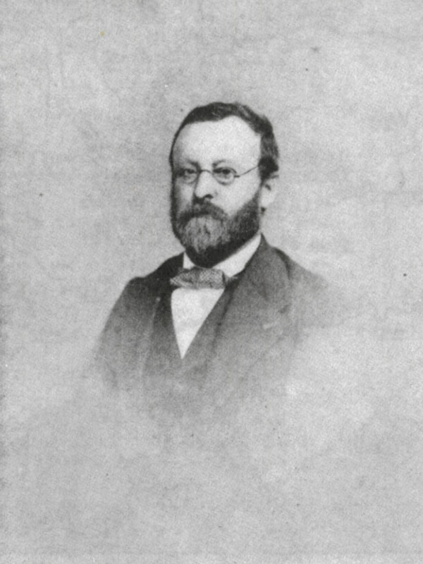

Charles Albin Mazon est un journaliste et un historien français, né à Largentière (Ardèche) le 24 octobre 1828.
Sa famille est originaire d’Antraigues. Son père Victorin Mazon (1796-1861) est médecin et sa mère Virginie Clément-Rouvière (1807-1836) est native de Nîmes.
Lecteur insatiable dès l’enfance d’ouvrages d’histoire, d’imagination et de poésie, Albin Mazon est d’abord élève du « petit séminaire » de Bourg-Saint-Andéol puis jusqu’en 1846 du collège de Privas, tenu par les Basiliens (temps dont il gardera un souvenir ému et reconnaissant).
Il entreprend ensuite des études de médecine à Paris. Mais le docteur Victorin Mazon, républicain convaincu, est compromis dans « l’affaire de Laurac ». En 1851, cela les oblige à s’exiler pour opinions politiques, en Suisse dans un premier temps, puis dans les États de Savoie, qui appartenaient alors au royaume de Sardaigne.
Albin Mazon doit renoncer à ses études de médecine pour trouver une situation. Il devient journaliste, à Chambéry d’abord, puis à Nice. Rédacteur à l’Avenir de Nice en 1855, il est un des artisans du rattachement de Nice à la France. Ses articles, prématurément favorables à l’idée de l’annexion, le font expulser par le gouvernement italien en 1861.
Après dix années d’éloignement, il se réfugie à Paris pour prendre la direction des services télégraphiques de l’Agence Havas. A l’occasion du rattachement de Nice à la France, il est décoré de la Légion d’honneur le 15 août 1862.

A sa retraite en 1890, il se consacre entièrement à l’histoire de son pays natal, le Vivarais, devenu le département de l’Ardèche. Infatigable explorateur et historien du département, Albin Mazon est l’auteur de nombreux ouvrages dont treize récits de voyages en Ardèche publiés sous le pseudonyme de « Docteur Francus ».
Ce nom évoque à la fois le souvenir d’une vocation médicale, le goût de l’histoire ancienne, l’amour du pays, le franc-parler, le souci d’observer les maux et d’y chercher remède… Tous ces éléments sont présents dans chaque volume de la série des « Voyages du Docteur Francus ».
Albin Mazon est mort à Paris le 29 février 1908. Il est enterré au cimetière de Privas où il possédait une maison, place des Mobiles, en face de la demeure de M. Paul d’Albigny avec qui il avait fondé la Revue du Vivarais.
Cet érudit chercheur a fait don du fruit de son travail d’historien, constitué de notes, lettres, coupures de presse, documents originaux… Pour Albin Mazon, cette documentation qui va de 1184 au XXe siècle, devait servir à un dictionnaire « historique, géographique, biographique, bibliographique, industriel et commercial » de l’Ardèche qui n’a jamais vu le jour.
Aujourd’hui numérisés et conservés aux Archives départementales, les registres de son Encyclopédie de l’Ardèche constituent une partie substantielle du Fonds Albin Mazon consultable en ligne.